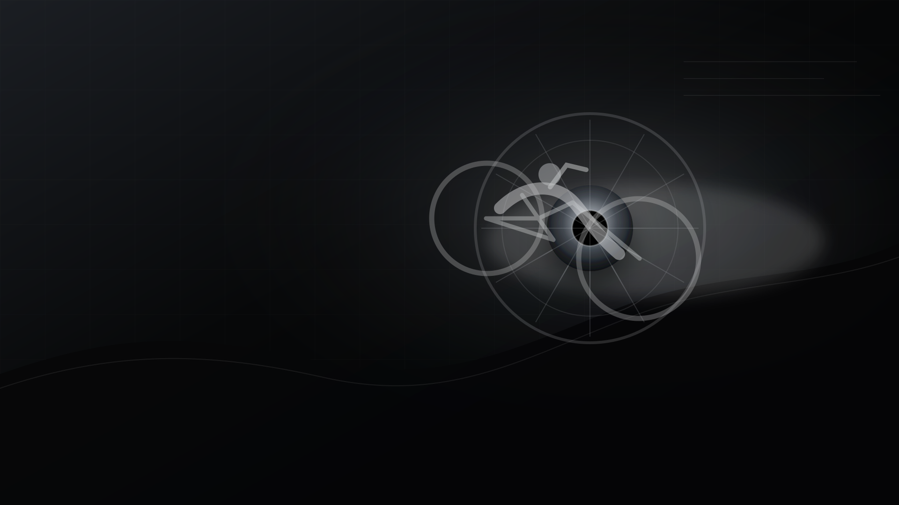
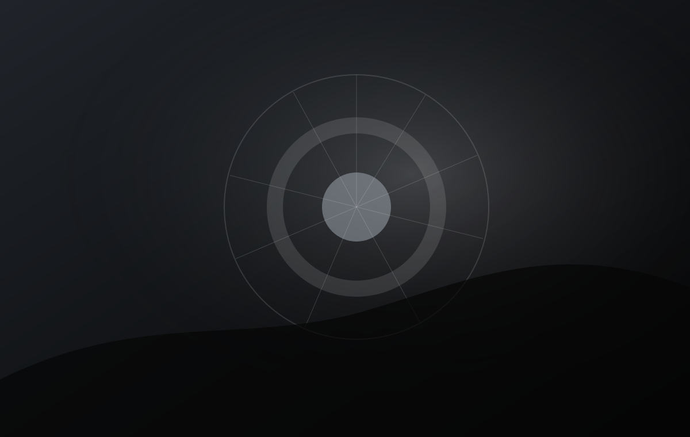
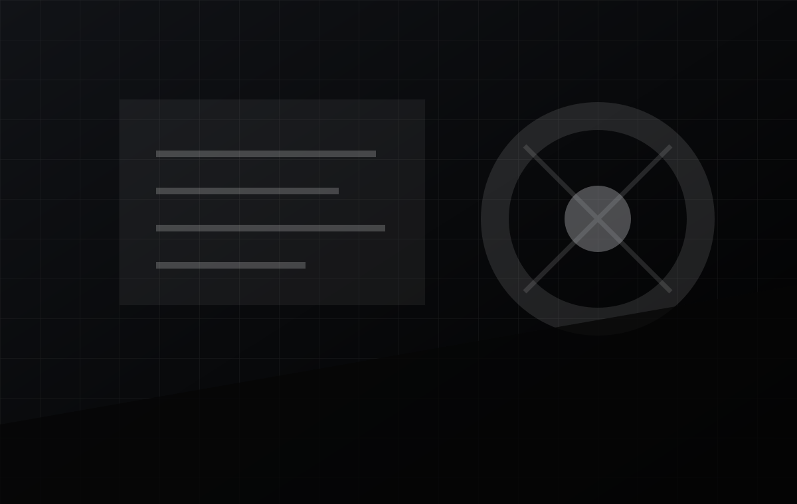
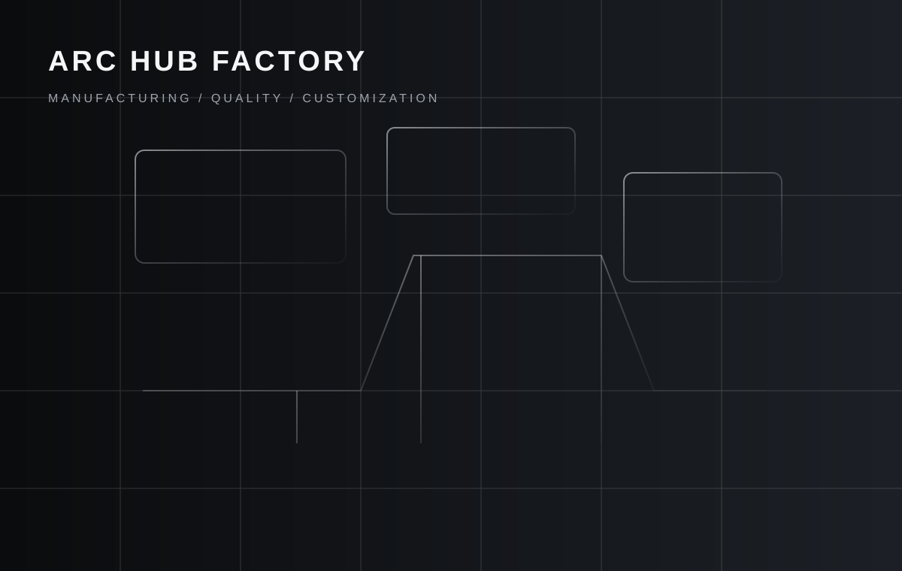

ARC Hub Factory · Taicang China
precision defines the ride
High-end bicycle hub systems for wheel brands, bike factories and OEM / ODM partners. ARC focuses on MTB, road, road disc, fixed gear, folding bike and custom hub manufacturing.
Explore hub systemsBuild precise hub platforms for bicycle brands that value performance, consistency and stable supply.
ARC focuses on high-end bicycle hub development and manufacturing. The homepage now follows a cleaner brand-product-factory-support flow, so buyers can quickly understand what ARC makes, how projects are supported and where to start an inquiry.

Technical clarity before product selection.
Axle standards, spoke hole count, brake interface, freehub body and finishing direction can be reviewed before sampling, reducing back-and-forth during B2B development.
View technology
From hub concept to branded supply program.
ARC supports OEM / ODM hub projects, including product direction discussion, logo marking, finish planning, sample review and bulk order communication.
Custom hubsFocused hub families for different wheel programs.
Use the product families as a clear entry point for technical matching. Each category can be extended in WordPress with model tables, specifications, application notes and inquiry buttons.

MTB Hubs
For BOOST, e-bike and off-road wheel builds.

Road Bike Hubs
Lightweight hub directions for road and gravel programs.

Road Disc Hubs
Disc brake hub solutions for modern road wheels.

Fixed Gear Hubs
Track-style and city-use hub options.

Folding Bike Hubs
Compact hub options for folding bike projects.

Special Hubs
Wheelchair, balance bike and other project-specific hubs.
A clearer path from specification to inquiry.
Define
Confirm application, axle standard, hole count, brake interface and freehub body.
Develop
Review sample direction, surface finish, logo marking and packaging requirements.
Supply
Move from approved samples to repeatable batch communication and long-term supply.
Factory credibility for hub programs that need stable delivery.
ARC was established in 2013 and is located in Taicang, Jiangsu Province. The company profile states about 20,000㎡ of factory area, more than 100 employees and annual output capacity of about one million high-end hubs.
View factory capability
Prepare the right details before requesting a hub solution.
For a faster technical reply, prepare product application, axle standard, spoke hole count, brake type, freehub body, color requirement, logo requirement and estimated order quantity.